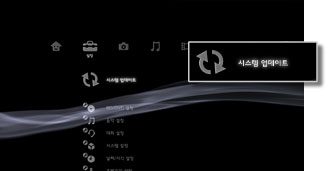

설정 > 시스템 업데이트
시스템 업데이트
PS3™의 시스템 소프트웨어는 수시 제공되는 버전 업데이트를 통해 다양한 기능 추가 및 보안 강화를 실시하고 있습니다. 항상 최신 버전으로 업데이트하여 이용해 주십시오.
업데이트 방법으로는 다음의 두 가지 방법이 있습니다.
- 인터넷을 경유한 업데이트
- 기록 미디어를 사용한 업데이트
중요
- 업데이트 도중에는 본체 전원을 끄거나 미디어를 빼지 마십시오. 업데이트가 도중에 중단되면 고장의 원인이 됩니다.
- 업데이트 도중에는 PS3™ 전면의 전원 버튼 및 무선 컨트롤러의 PS 버튼이 기능하지 않게 됩니다.
- 콘텐츠에 따라서는 먼저 시스템 소프트웨어를 업데이트해야 재생할 수 있는 경우가 있습니다.
인터넷을 경유한 업데이트
업데이트 데이터를 인터넷에서 PS3™로 직접 다운로드하는 방법입니다. 최신 시스템 소프트웨어가 자동으로 다운로드됩니다.
1. |
 |
|---|---|
2. |
[인터넷을 경유한 업데이트]를 선택합니다. |
 (설정)에서
(설정)에서  (시스템 업데이트)를 선택합니다.
(시스템 업데이트)를 선택합니다.기록 미디어를 사용한 업데이트
디스크, Memory Stick™ 등의 기록 미디어에 저장된 업데이트 데이터를 사용합니다. PC를 사용하여 웹 사이트에서 업데이트 데이터를 다운로드합니다. 상세한 사항은 각 지역 웹 사이트를 참조해 주십시오.
알아두기
- 게임 디스크, 시판되는 BD 비디오 소프트웨어(BD-ROM) 등에 업데이트 데이터가 포함되어 있는 경우가 있습니다. 업데이트 데이터가 들어 있는 디스크를 재생하면 업데이트 안내 화면이 표시됩니다. 화면의 지시에 따라 업데이트해 주십시오.
- 사용하시는 PS3™에 따라서는 기록 미디어를 사용하기 위해 별매의 USB 어댑터가 필요한 경우가 있습니다.